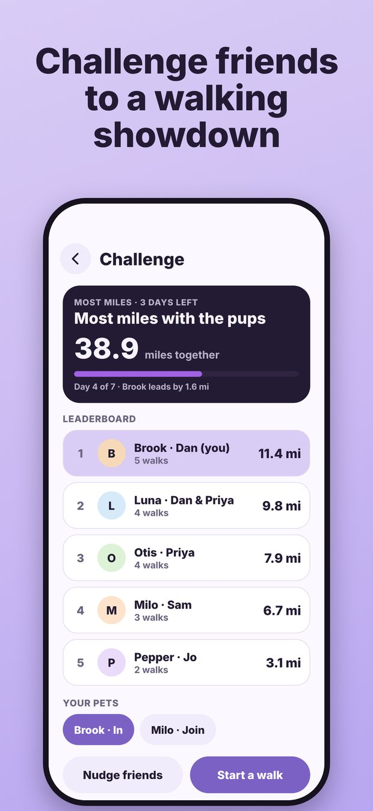

Everyone who loves your pet, in one circle.
Share your pet's care handbook, plan trips with friends and family covering the days, track walks, and keep up with every pet in your circle. No strangers. No random sign-ups.
For iPhone. Free to try.
Built for the way pet care actually works.
Pet Circle is made for owners, partners, family and friends who share the care, not for hiring strangers.
Care handbook
Feeding times, medications, vet details, allergies and emergency notes in one place, with repeating reminders for the daily pill or the vet visit.
Trips and sitters
Plan a trip, pick the days that need care, and let friends sign up. You approve each day, share how to get in, and get a report after every visit.
Walks and streaks
Track a walk live with a route map, keep daily streaks, and look back on a monthly calendar of walks and photos.
Circles and chat
Group chats with photos and reactions for your family and friends, plus groups for the people you walk with.
Stories and activity
Share photos, videos and text stories of your pets with the people you choose. Stories disappear after 24 hours.
Private by design
Only the people you accept can see your pets. Block and report tools are built in, and you can delete your account in a few taps.
From "who can feed Milo?" to done in minutes.
Three steps to a pet-care routine your whole circle can share.
Add your pets
Set up each pet's profile and handbook once: food, meds, vet, routines and notes.
Invite your circle
Add friends and family. Only people you've accepted can see your pets or help with them.
Share the care
Plan trips, approve who covers each day, and see photo updates and visit reports as they happen.
Keep the streak going.
Turn walks into a habit you share with friends.
- Live route tracking with distance and time
- Daily streaks for every pet
- Monthly calendar with your walk photos
- Friendly challenges with your circle or groups
